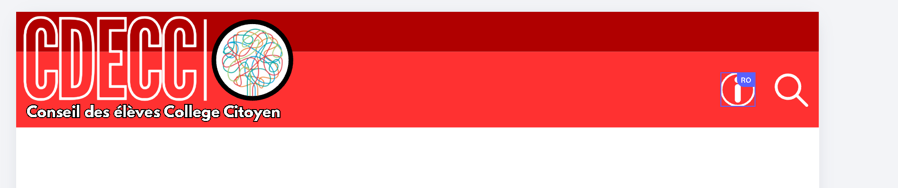

🌿
Idée en discussionPlus de verdure à l’école
Explorer des façons d’ajouter des plantes et des espaces agréables dans les lieux communs.

L’Assemblée citoyenne rassemble les voix des élèves, fait circuler les idées et aide à transformer les propositions en actions concrètes au Collège Citoyen.
Les sujets qui font avancer notre communauté.
Explorer des façons d’ajouter des plantes et des espaces agréables dans les lieux communs.
Imaginer une activité où les élèves peuvent partager leurs passions et leurs créations.
Les nouvelles de l’Assemblée citoyenne.
Ce site de démonstration présente les informations, les projets et les façons de participer. Le contenu sera validé par l’école avant toute publication officielle.
L’Assemblée citoyenne permet aux élèves de faire entendre leurs idées, de représenter leur classe et de travailler ensemble sur des améliorations réalistes.
Le représentant recueille les idées, les questions et les préoccupations de ses camarades.
Les représentants apportent les sujets aux rencontres et expliquent les besoins de leur classe.
Le groupe échange avec les personnes concernées et propose des actions possibles.
Les nouvelles et les décisions sont partagées pour que les élèves sachent où en sont les idées.
Les représentants font le lien entre leur classe et l’Assemblée citoyenne. Les noms ci-dessous sont fictifs et servent uniquement à présenter le modèle.
Coordonnent les échanges et les rencontres.
Aime organiser les idées du groupe et s’assurer que chaque point de vue est entendu.
Aime trouver des solutions pratiques et faire le suivi des propositions.
Exemples de profils pour montrer la présentation.
Un projet commence par une idée, se construit en équipe et avance avec un suivi clair. Les exemples ci-dessous sont fictifs.
Explorer des façons d’ajouter des plantes et des espaces agréables dans les lieux communs.
Imaginer une activité où les élèves peuvent partager leurs passions et leurs créations.
Trouver une façon simple de transmettre les nouvelles et les décisions aux classes.
Réfléchir à des gestes qui aident chaque élève à se sentir inclus dans la communauté.
Cette page montre à quoi pourraient ressembler les informations d’une élection. Les résultats et candidatures sont entièrement fictifs.
Exemple visuel uniquement.
Avant de lancer une élection officielle.
Définir l’admissibilité et le moyen de confirmer la participation selon les règles approuvées.
Publier des critères clairs et une démarche connue de tous les élèves.
Faire approuver la confidentialité, la sécurité, le vote unique et le dépouillement.
Faire vérifier et approuver les résultats avant toute publication publique.
Les nouvelles officielles pourront être publiées par les personnes autorisées. Pour le moment, cette page contient uniquement des exemples.
Ce site de démonstration présente les informations, les projets et les façons de participer. Le contenu sera validé par l’école avant toute publication officielle.
Les élèves pourront partager leurs propositions par le formulaire ou en communiquant avec leur représentant de classe.
Un suivi clair aide toute la communauté à comprendre ce qui est discuté, ce qui avance et ce qui reste à décider.
Vous avez une idée pour améliorer la vie au collège ? Partagez-la ou communiquez directement avec un enseignant par courriel scolaire.
Envoyez un courriel à un enseignant avec votre adresse scolaire.
Expliquez brièvement votre idée et, si vous le souhaitez, demandez à votre représentant de classe de la présenter à l’Assemblée citoyenne. Utilisez le courriel scolaire et les coordonnées que l’école vous a fournies.
Aperçu de l’interface proposée pour l’équipe autorisée. Cet espace est une maquette interactive, pas une connexion sécurisée.
Dans la version finale, l’équipe autorisée pourra modifier les textes bilingues, préparer une nouvelle et vérifier son aperçu avant publication.
Les scrutins réels nécessiteront une procédure approuvée, un système de connexion validé par l’école, des contrôles de confidentialité et une approbation des résultats.
La version finale pourra gérer les classes et les rôles. Les noms et les photos ne seront ajoutés qu’après validation par l’école.
L’accès réel devra être limité aux enseignants et au personnel autorisé. Les rôles exacts seront définis avec l’école.
Prototype d’interface seulement. La sécurité et les permissions devront être mises en place avant tout usage réel.